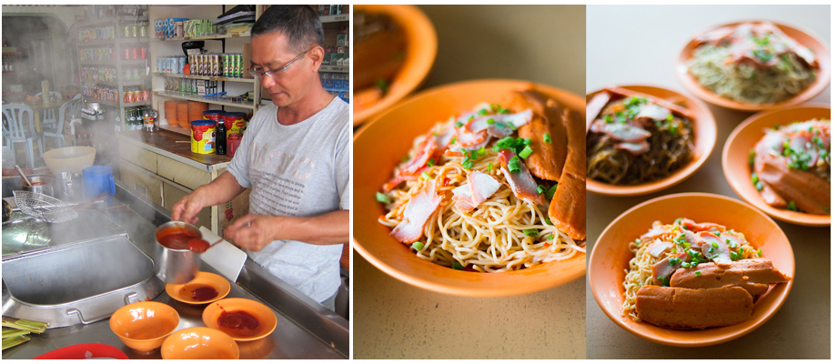

If you are a fan of noodles, you must have a try of Heng Heng wanton noodles which taste oh-so-delicious! This is highly recommended food here in Pontian. You will surely can't resist the bright red tomato sauce in wonton noodles which has a perfect match of special sauce! You should try this one!
Locations :Jalan Johor, 82000 Pontian, Johor, Malaysia. Business Hours :Mon - Sat, 1:00PM to 6:15PM;Sundays, 11:00AM to 5:00PM 